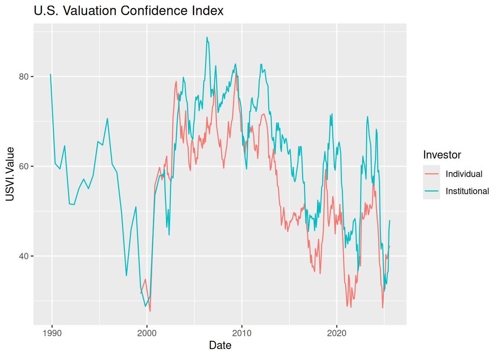

library(devtools)
devtools::install_github("EnriquePH/marketconf")Package marketconf: Stock Market Confidence Indexes
The R package marketconf reads data on U. S. Stock Market Confidence Indexes from the Yale School of Management’s International Center for Finance web page.
This package is designed for stock market prediction and risk valuation, and it is compatible with other packages like:
Package installation
Examples
Listing confidence indices
The four U.S. stock market confidence indices are derived monthly from survey data on investors’ behavior. These indices are:
library(marketconf)
library(knitr)
kable(US_confidence_indices()[c(1, 3, 4)])| Symbol | Description | Info |
|---|---|---|
| US1YI | U.S. One Year Confidence Index | The percent of the population expecting an increase in the Dow in the coming year. |
| USVI | U.S. Valuation Confidence Index | The percent of the population who think that the market is not too high. |
| USBODI | U.S. Buy-On-Dips Confidence Index | The percent of the population expecting a rebound the next day should the market ever drop 3% in one day. |
| USCI | U.S. Crash Confidence Index | The percent of the population who attach little probability to a stock market crash in the next-six months. |
Plotting
This is a basic example that plots the U.S. Valuation Confidence Index:
library(ggplot2)
index_symbol <- "USVI"
index_df <- get_index(index_symbol)
ggplot(index_df, aes(x = Date, y = USVI.Value, color = Investor)) +
geom_line() +
ggtitle(get_index_description(index_symbol))
License
The markerconf package is licensed under the MIT License (MIT), but the Stock Market Confidence Indexes are produced and copyrighted by the International Center of Finance at the Yale School of Management. Please refer to the TERMS OF USE on Yale University’s web page for further information.